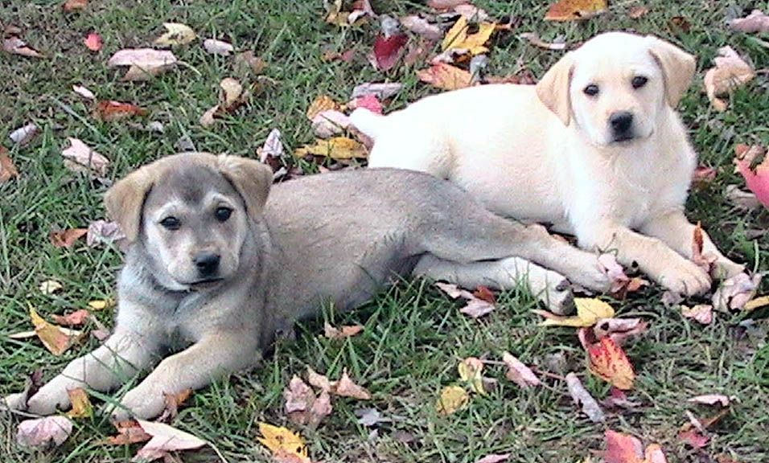

By just petting a dog or puppy, dopamine and serotonin is released in your brain, causing you to become happy and calm.The beach of Santa Monica is free for all and is usually filled with locals in the summertime.One of my favorite desserts is ice cream, preferably vanilla.